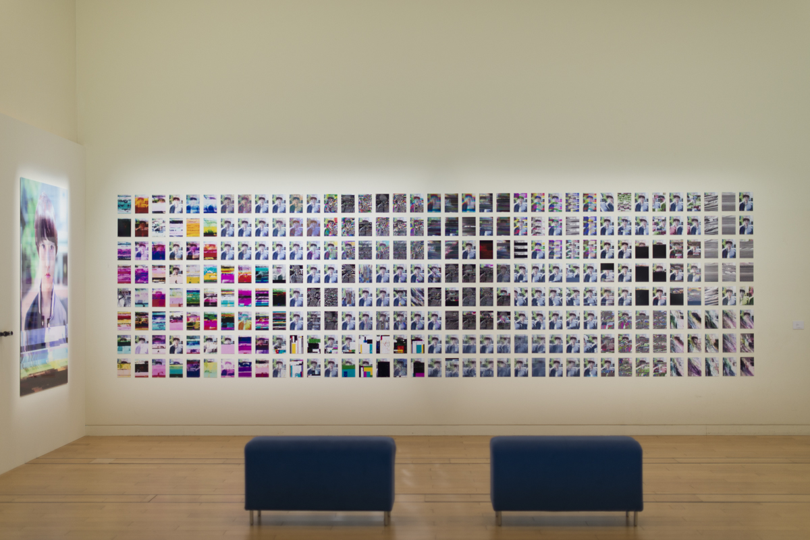
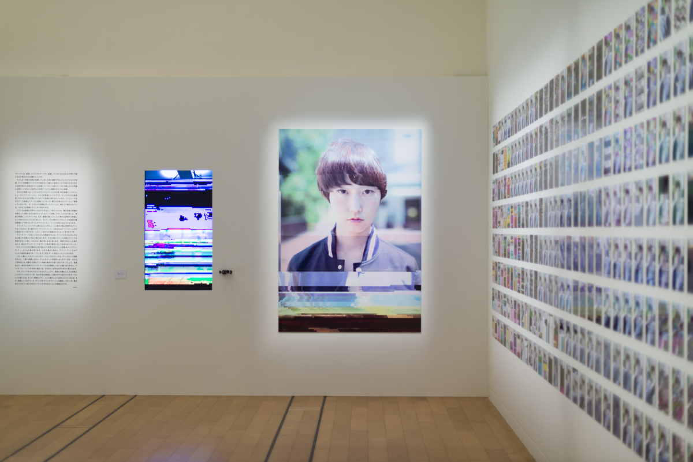
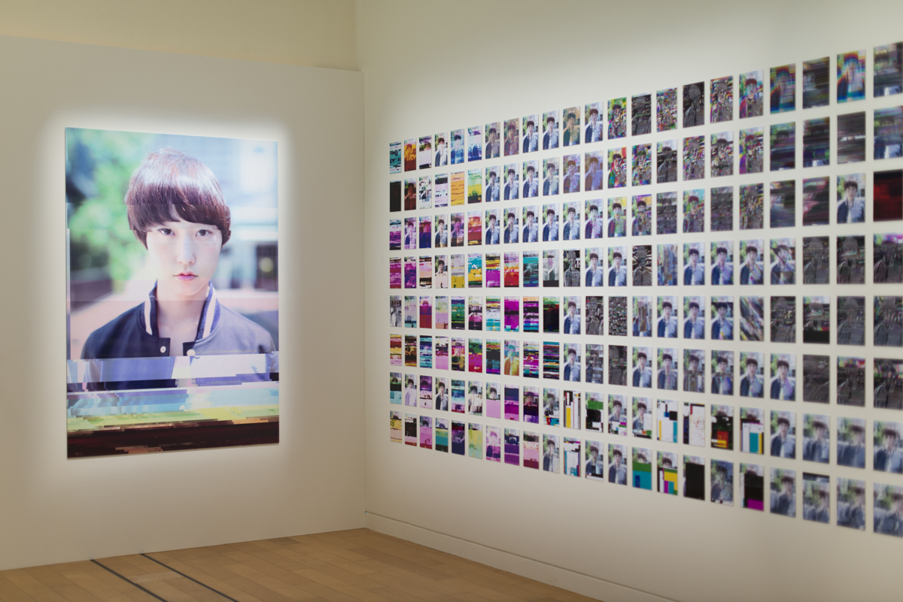
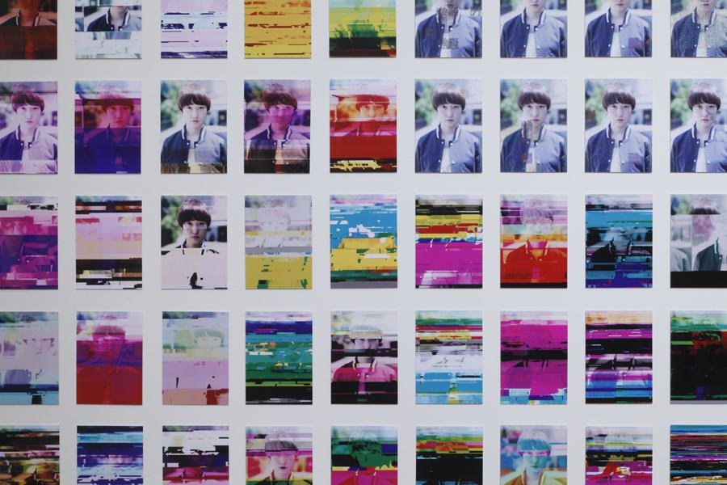

The installation work consists of the catalogue of glitch in several file formats.
It was exhibited in the group show
Open Space 2013 at NTT InterCommunication Center [ICC], Tokyo.
   Photos above: GOTO Takehiro  Photo: KIOKU Keizo, Photo courtesy: NTT InterCommunication Center [ICC]
In the work; Model: bómi, Camera: GOTO Takehiro, Hair & makeup: NAKAGAWA Rieko, Cooperation: ISU Taeko
A glitch is a phenomenon that occurs when corrupted digital data are played without being recognized as unplayable even though they are defective.
Glitches appear in the form of photographs made with a digital camera that doesn't work properly due to a defective interior circuit; jumpy TV images shattered with block-shaped noise because of an antenna or other defect; or JPEG pictures in blogs etc. that appear discolored compared to the respective original due to data deficits during the uploading process.
These phenomena are results that neither the system and digital file specifications, nor the computers and applications used as reproducer devices, programmers who implemented those, or the viewer had expected. The computer either doesn't recognize the data defect as an error, or ignores it as a considered error. The images eventually appear on the display in a distorted shape. This is the phenomenon we call glitch.
The glitch was first introduced as a technique in the realm of music. Starting off as a result of experimentation in electronic music, it gradually established itself as a genre in its own right. The glitch in music language was initially used to refer to the audio image of a scratched, skipping CD. In the post-CD era, the style of digital noise used as a compositional element has come to be known as glitch music.
More than five years after the advent of glitch music, over the past couple of years, the visual glitch has installed itself as part of a new art form we call "glitch art," a uniform definition of which, however, is yet to be established.
Within the discourse on glitch art, some are seeing the very nature of the glitch in the way it affects us. Those who champion this point of view say that true glitches cannot be reproduced, and that they disappear in a blink of an eye. As they claim that glitches aren't reproducible, they will have to make glitch art without glitches. Others define glitch art as images with arbitrarily rearranged or distorted pixels. From their point of view, this would mean that glitch art refers to artificial artworks based on the motif of the visual glitch effect.
Within this discussion of the glitch as an "affect" and the glitch as a motif, glitch art has begun to solidify between these two poles centered around the glitch as a phenomenon. In the future, it is probably be the former idea that will prevail in the discussion and aesthetic of the glitch, while the latter will surely seize the name "glitch art" in a more general sense. In a nod to the precedent of glitch music, this just seems to be the way it goes.
So what about the glitch itself? We're talking about the glitch as a phenomenon, as defined at the beginning. In my own work, I am not at all interested in dealing with the motif of the glitch or the way it affects us. What I am trying to highlight is the phenomenon, the realm of "the glitch itself" that is probably going to be abandoned as the glitch develops into glitch art.
ucnv